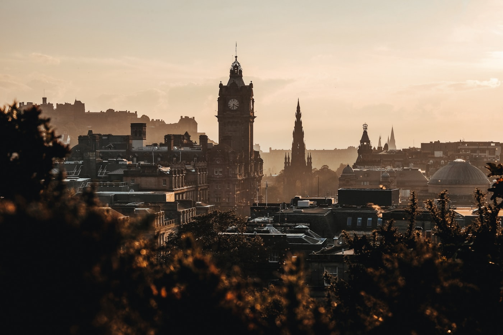
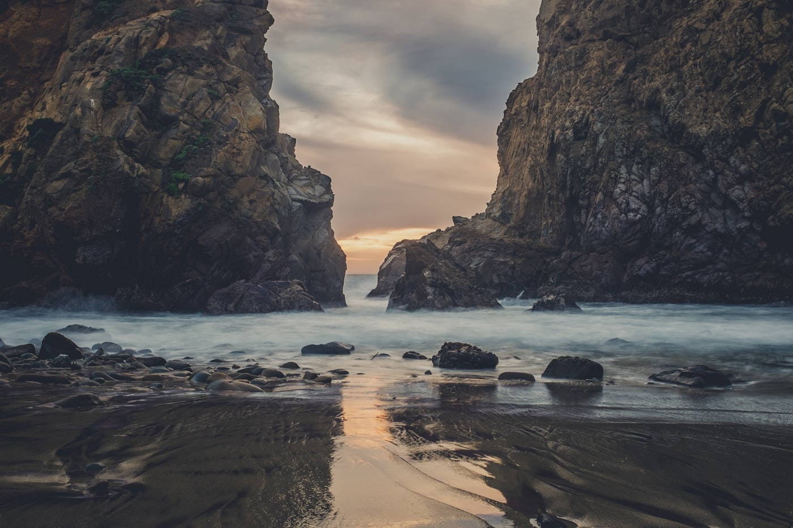

The Geography
The Land
Before the castles came the land that demanded them — wild, vast, and unconquerable.

GlencoeThe Highlands — dramatic glens, Munros, and the Great Glen fault line

Isle of SkyeThe Islands — each with distinct castle heritage
The LochsOver 30,000 freshwater lochs

Ben NevisBritain's highest peak

The Coastline6,160 miles of coast — more than France

The BordersRolling farmland and the densest tower houses in Europe

Outer HebridesWhite sand beaches at the edge of the world